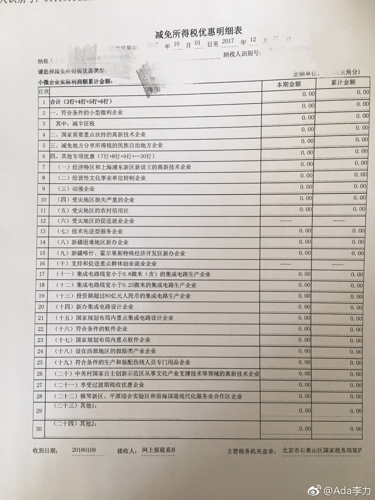

#创业#年度财务报表里的“减免所得税优惠明细表”可以看出国家的扶持方向。从这个表里，找不出目前业务能沾边的类目。
了解过北京的高新技术企业认定，申请门槛还是挺高的。沈阳公司也申请过当地的高新企业，我当时不看好，不过人事同事看过文件觉得很有希望，各个指标都符合，那就姑且试试。结果没通过时，同事还自责一番。虽然花了些冤枉钱，但同事这么积极地为公司着想，怎么也是需要鼓励和肯定的。
之前呆过的几家公司都享受过软件行业的个人所得税减免。现在想来还是感谢公司的人事部门为工程师们争取到了福利，因为手续办下来很麻烦，作为人事部门自己，通常并不能从这个认证上获益，如果不是老板重视，推诿态度会居多。
了解过北京的高新技术企业认定，申请门槛还是挺高的。沈阳公司也申请过当地的高新企业，我当时不看好，不过人事同事看过文件觉得很有希望，各个指标都符合，那就姑且试试。结果没通过时，同事还自责一番。虽然花了些冤枉钱，但同事这么积极地为公司着想，怎么也是需要鼓励和肯定的。
之前呆过的几家公司都享受过软件行业的个人所得税减免。现在想来还是感谢公司的人事部门为工程师们争取到了福利，因为手续办下来很麻烦，作为人事部门自己，通常并不能从这个认证上获益，如果不是老板重视，推诿态度会居多。
- 